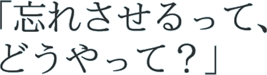
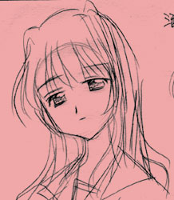

2003年9月9～16日： 「今日のコピー」を更新 2003年9月8日：本サイトを公開
ホーム
コピーライターになりたい。
制作：LOVERSOUL
発売日： 2003年12月30日
今日のコピー：『海の底の廃墟』の酒々井乃里子について

悪女である。 周の幽王の寵姫・褒姒は、幽王がどれほど躍起になって手を尽くしても、けっして笑わなかったという。幽王はなぜ、そんな女に入れ揚げたのか。 褒姒は、笑いを拒むことで、「この世界は退屈な場所である」と主張した。この主張は、幽王の不安そのものだった。褒姒を笑わせようと躍起になった幽王は、実は、自分自身の不安を打ち消そうとしていたのだ。 幽王のこの努力は、空回りを運命づけられている。たとえ努力が実り褒姒が笑っても、幽王の不安は消えない。 酒々井乃里子は、褒姒のように、空回りの軸、不安を映す鏡を、差し出す。 悪それ自体はなにもしない。悪を行うのは人である。この意味において、酒々井乃里子は悪女である。

コメント：
広辞苑で「悪女」を引くと、「(1)性質のよくない女。(2)顔かたちの醜い女。醜婦。」とある。(2)はともかく(1)の、人間に対して「性質のよくない」とは謎めいた表現である。 中里介山『大菩薩峠』は、悪女についての印象深い記述を含んでいる。主要登場人物のひとりであるお銀は、悪女といわれる古今東西の女性を列挙し、悪女についての考察を述べ立て、悪女とされた女性に対する共感を表明し、ついには「悪女塚」なるものを建造する。あいにく、お銀の考察の詳細はすべて忘れてしまったが、「悪女」という概念のいかがわしさだけは、いまも深く印象に残っている。
■Visual Reading Story『希望入りパン菓子』はWindows用ソフトウェアです。 ■本作品はコミックマーケット65にて発売日に頒布されるほか、 来年初頭から全国の同人誌ショップでお求めいただけます。 ■本作品は、表題作のほか2編（人生に必要な技術、海の底の廃墟）とあわせて3編からなるオムニバスです。 ■本作品には男性は登場いたしません。あらかじめご了承ください。
©LOVERSOUL・東ガル会・西在家香織派／快楽園梅香・中里一